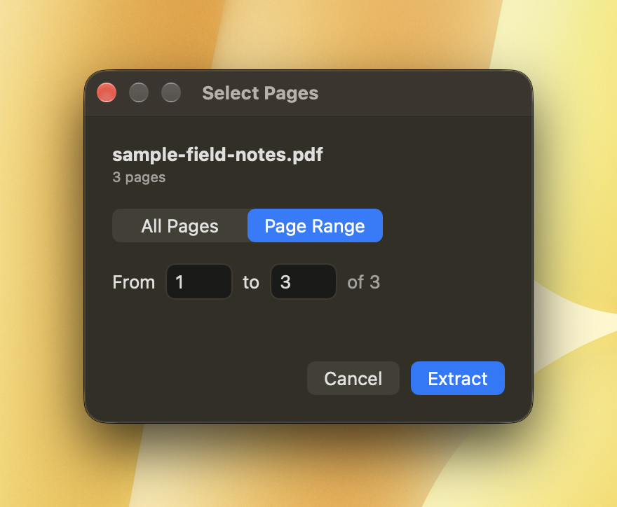
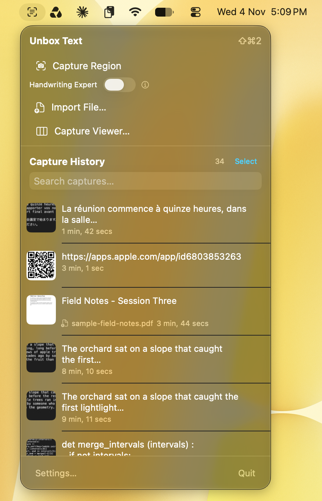
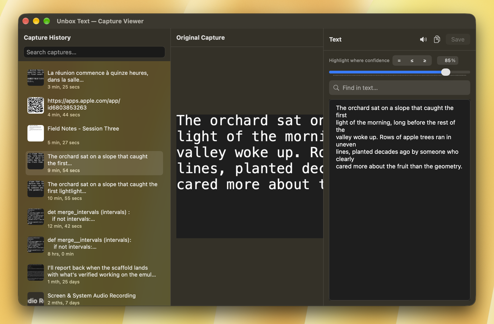
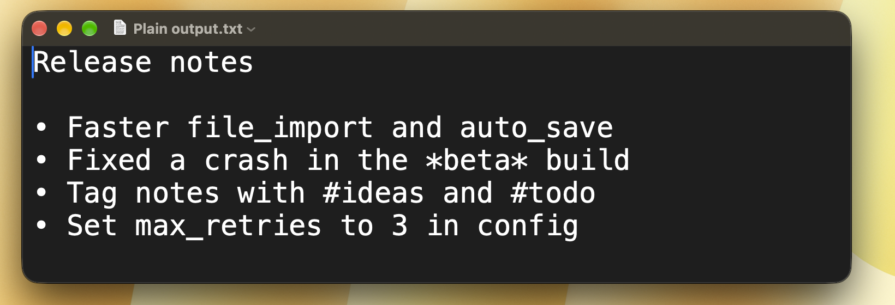
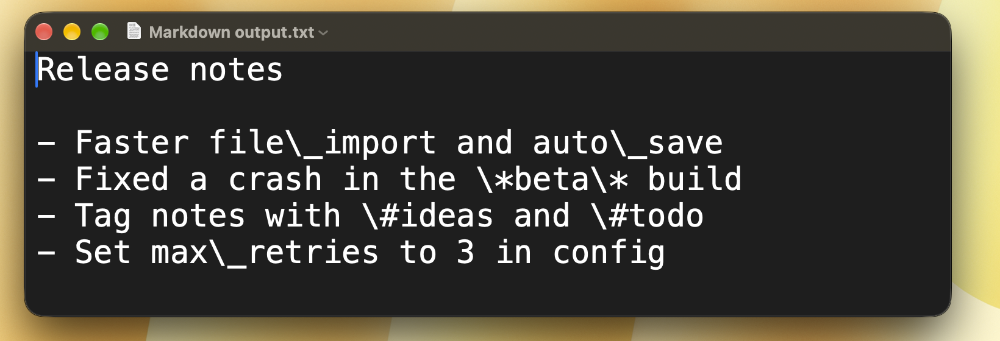
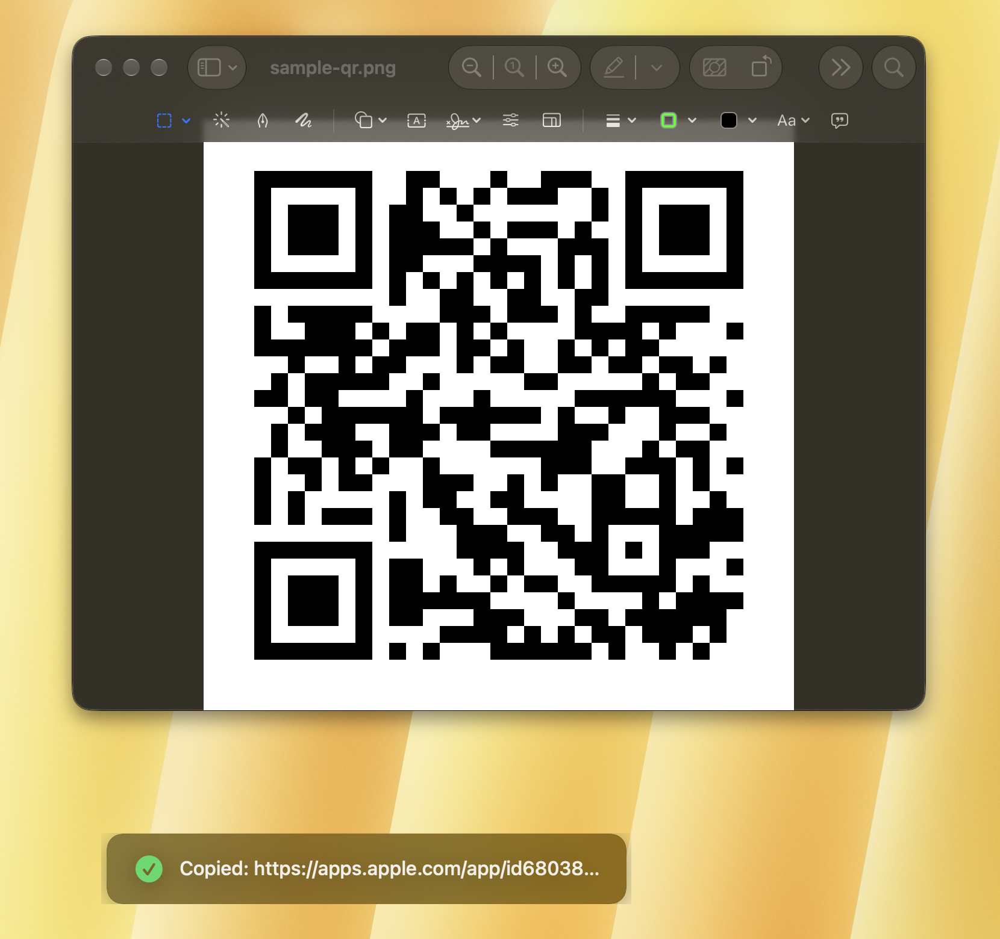
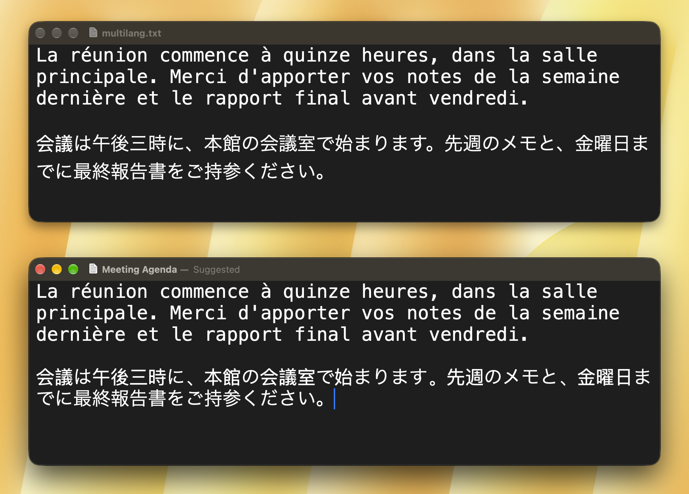

What Unbox Text does
Point it at a block of text — on your screen, in a PDF, in a photo of a whiteboard — and it comes out the other side as real, pasteable text in about a second, read right off the page with Apple's own on-device OCR.
macOS 13+ · Screen Recording permission only — no Accessibility, no Input Monitoring
Nothing leaves your Mac by default
The capture loop, history, Capture Viewer, Markdown mode, read-aloud, and QR/barcode detection all run entirely on-device with Apple's Vision framework. No account, no sign-in, no network call — unless you explicitly turn on Handwriting Expert.
One shortcut, from anywhere
A single customizable hotkey works from inside any app, so you never have to switch to Unbox Text first. Change it any time in Settings — it checks for collisions with the app's own other shortcuts as you record a new one.
See it in action
A quick walkthrough of the capture loop, history, and a few of the modes below.
One shortcut turns any screen into text
Press your hotkey (⌘⇧2 by default) from inside any app, drag a box around whatever you want — a sentence, a paragraph, a whole screen — and Unbox Text reads it with Apple's on-device Vision OCR and drops it straight onto your clipboard, usually in under a second.
Nothing leaves your Mac to make that happen, and there's no account to sign into first. Don't like the default shortcut? Change it any time in Settings.
Not just the screen — PDFs and images too
Drag a PDF or image straight onto Unbox Text, or use File → Import, and it runs the same on-device recognition over the whole file instead of just what's visible on screen.
Multi-page PDFs get a page-range picker, so you can pull text from page 12 of a 200-page document without waiting on the other 199.

Every capture, saved and searchable
Unbox Text keeps a history of everything it's ever recognized, each one with a thumbnail of the original image or PDF page right next to the text it found.
Search across the whole history, reopen any past capture, and re-copy or re-export it whenever you need it again — nothing you've captured is ever really gone.

Fix the one word it got wrong
Open any capture in the Capture Viewer and you get three panes side by side: the original image, the text Unbox Text recognized, and that same text with low-confidence words highlighted.
Click a highlighted word to correct it right there, before you copy or export — so a single misread character doesn't ride along into whatever you're pasting into.

Captures that paste cleanly into your notes
Turn on Markdown mode and Unbox Text does the formatting work for you: it spots code blocks by the geometry of the text itself — consistent monospace character widths, not keyword guessing — and wraps them in fenced code blocks automatically.
- List markers get normalized into proper Markdown lists
- Markdown's special characters are escaped in ordinary prose, so they don't get misread as formatting


Or just listen to it
Every capture can be read aloud. A small "now playing" pellet floats on screen across apps and Spaces, with play/pause, skip forward or back by sentence, a scrubber, and a voice and speed you pick.
Turn on auto-speak and Unbox Text starts reading the moment a new capture finishes — handy for a long PDF you'd rather listen to than scroll through.
Codes and other languages, handled automatically
Catch a QR code or barcode in a capture and Unbox Text decodes it on the spot — no separate scanner app needed for something that was already sitting on your screen.
Recognition isn't limited to English either: it uses Vision's own language auto-detection, so text in most of the languages Vision supports gets read correctly without you telling it which one to expect.


Handwriting Expert, for the messy stuff
On-device Vision is good, but cursive or messy handwriting is still genuinely hard for any on-device model. Handwriting Expert is an opt-in mode, off by default, that routes that one capture through Microsoft Azure's cloud Read API instead — which does meaningfully better on handwriting.
It's bring-your-own-key: you create your own free Azure account (the free tier covers around 5,000 reads a month) and paste your own endpoint and key into Settings. Unbox Text never sees, stores, or pays for that usage — it's your account, your quota. A one-time disclosure names Azure explicitly before this can ever be turned on.
Everything else on this page stays on-device, with or without Handwriting Expert turned on.
Still have a question?
Check the support page first — if it doesn't cover it, we'd like to hear about it directly.